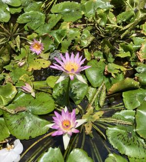

うるがいの話 ある日
最新: 郵便物の配達を停止する【うるがいの話 ある日】とは 一日だけのプログです
『うるがいの話』の最新一日だけのプログで、通信料が少なく経済的だ。カニの画像をクリックすると全ての日付が載る『うるがいの話』サイトを表示します
|
|
【うるがいの話】 うるがい(ｳﾙｶﾞｲ urugai)とは、『もずくがに』の名前でとても大きくなります。 |
|---|---|
|
|
【カミマヤーの話】 猫のことを方言でマヤーといいます。カミマヤー（kamimayaa）とは、神の猫のことです。 |
|
【たながぁの音楽】 たながぁ（ﾀﾅｶﾞｰ tanagaa）とは手長えびのことで、何種類かあり大きいのは車 エビぐらいになります。 |

|
【ぶながぁの話】 ぶながぁ(ﾌﾞﾅｶﾞｰ bunagaa)とは、赤い髪の毛、赤い身体、そして身長は１ｍ２０ｃｍ ぐらい、川の蟹を食べているの目撃された。場所は沖縄県国頭郡大宜味村のと ある村僕の隣近所に住んでいる爺さんから、聞いた話です。 |
|
|
【ギーマの話】 ギーマ(giima)とは、山原の里山に咲くスズランに似た、 花を付けます。実は食べられます、 気が付くと口の周りが紫になっています。 |
2025年07月01日 (火）郵便物の配達を停止する
16:20
マンションの買主に変な郵便物が届くと、いい気持ちがしないよね
とヨメを説得、やっと郵便物の配達を停止することに。事前にネッ
トで調べると、『死亡証明書』と『戸籍謄本』がいるらしい。郵便
局に行く前に、『死亡証明書』は葬式の時に５部ほどもらっている
ので、あとはコンビニでマイナンバーカードで『戸籍謄本』を取れ
ばいいというヨメは段取りをつける。コンビニに行く前に、郵便局
で確認をしたほうがと、アドバイスする。郵便局へ行くと、女性の
職員が丁寧な対応で、配達を停止する届書の記入要領をホローする
。あっという間に終わる、二つの提出書類は不要だった。ネットの
情報は、ウソばっかりと怒っていた。
不動産登記にひと月ほどかかるとの話が、昨日契約に同席した司法
書士の人が、言っていた。「不動産登記の義務化」が開始されたこ
とが原因らしい。売主は関係ないが・・・。
ヨメの家族が納骨されている寺へ、年一回の管理費の支払いを兼ね
ながら、マンション売れましたとトートーメーに報告をする。
